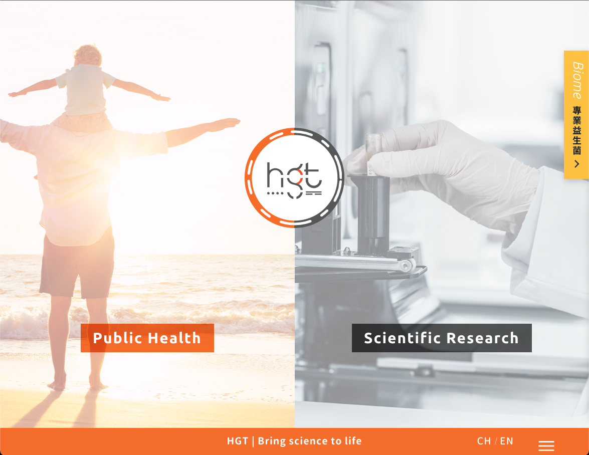
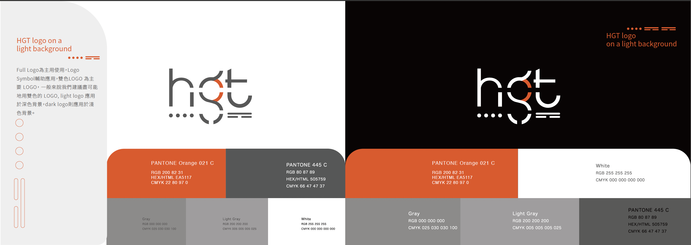

Case · 10 週年翻新 · Website
康健基因
十週年品牌翻新——讓 B2B 基因科技品牌，也說得進 B2C
Public Health ↔ Scientific Research
Lead · 4 個月
My Role — Lead UI/UX & Product Designer
Client — Health GeneTech Corp.

康健基因 — 基因科技品牌，十週年翻新官網。挑戰：如何同時說服 B2B 專業研究端與 B2C 一般健康使用者？
Process · Double Diamond
雙鑽石 · 康健基因
客戶 brief：十週年翻新 · B2B→B2C · 首頁要放專有名詞 → 研究後改層級
調研 Research
訪談 · 問卷Stakeholder + 使用者
Brief：B2B→B2C · 名詞上首頁
整合 Synthesis
Persona 雙軌Public Health / Scientific Research
機會：Hero 分流 · 分層
構思 Ideation
IA · User flowWireframe（含客戶首版）
Hero 雙路徑方案
實現 Implement
易用性測驗 → 迭代方案驗證 · Hi-fi · CI · 官網
HMW · 兩鑽銜接
如何讓一般健康使用者與專業研究端在同一官網各走對的路——保留專業可信度，又不讓首頁術語擋住 B2C？
Insights · 易用性測驗
首頁上的專有名詞，對使用者是「無效資訊」
依客戶規劃，專業術語放在首頁露出。易用性測驗卻發現：使用者根本不知道那是什麼，無法建立信任，也無法推進「想了解／想購買」的下一步。假設被改寫：首頁堆專有名詞 ≠ 顯得專業；對 B2C 來說，看不懂的曝光只是噪音。
客戶假設
名詞放首頁 = 證明實力
醫療專業背景驅動的規劃：技術必須第一眼被看到。
測驗發現
看不懂 = 無效資訊
阻擋理解與產品推廣；專業內容改放可選的深層路徑。
設計決策 · 兩層分流
① Hero：Public Health／Scientific Research 先選身分與任務 →
② 路徑內：專有名詞與昂貴器材再進 Tab——專業仍在，但不擋 C 端入口。
Delivery & Impact
十週年新形象 · 易用性調整後的官網
01 · 品牌
翻新氣象
- 十週年新企業形象（CI）
- logo 以摩斯點線為骨，呼應 DNA 解碼者定位
- 橘色主調，跳脫生技慣用藍綠
02 · 官網 IA
從 Hero 分流
- Public Health ↔ Scientific Research
- 路徑內：名詞／器材 → Tab
- 流程插圖降低未知焦慮
03 · 系統
可維護交付
- CI 手冊 · 12 欄網格 · 元件
- Handoff-ready
- 服務後續產品推廣


網站貢獻
- Hero 雙路徑：Public Health / Scientific Research，進站即分流
- 易用性改層級：名詞與器材進 Tab，不擋 C 端推廣
- 對齊商業目標：B2B 仍在、B2C 進得來、產品說得清
GA4 占位：雙路徑點擊 · 服務／流程頁 · Tab 互動 — 有數再換上
Takeaway · ASUS
先分流使用者，再決定規格放哪一層——Hero 選路，細節進 Tab，用測試驗證而不是全堆首屏。